01
Capture
Photos from fixed site cameras, taken automatically every four hours, or uploaded from a phone, camera or drone at coordinates from your plan.
Working prototype / Field test next
WorkGuardAI reads the DWG plan you already have and measures groundwork progress from ordinary site photos, location by location. The prototype works on a real project's plan and imagery. Now we are looking for the first pilot site.
25–26 Nov 2026 Pitching on stage at MeOut Summit, Budapest
01 · How it works
Photos from fixed site cameras, taken automatically every four hours, or uploaded from a phone, camera or drone at coordinates from your plan.
An open-source AI depth model (Depth Anything V2) estimates the excavation depth in metres from each photo, at its plan coordinate.
The estimated depth is compared with the planned depth from the DWG, giving progress at each point of the plan.
Each point shows its status by colour, an overall progress bar sums up the site, and email alerts report the coordinates with current and planned depth.
Illustrative concept with sample data. Working prototype; field test pending. Exploring next: camera GPS and LiDAR for higher precision.
Ordinary site photos, like the ones the prototype measures: taken by phone or drone, by day and at night.
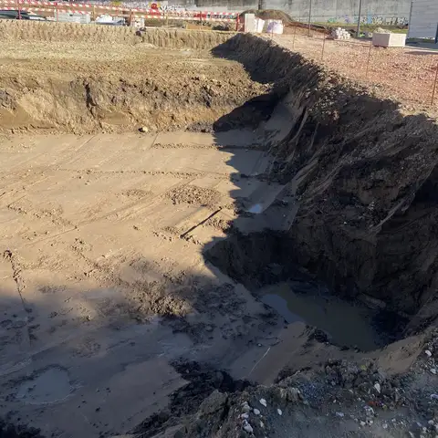
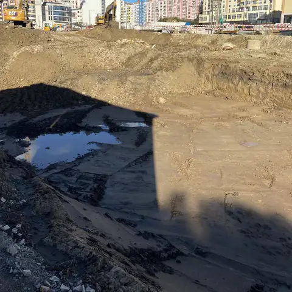
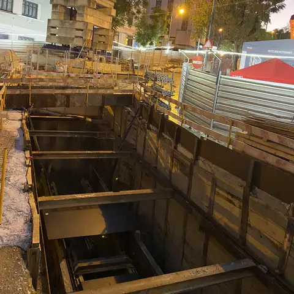
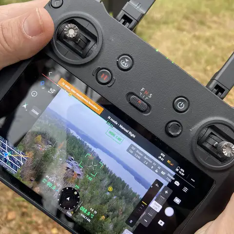
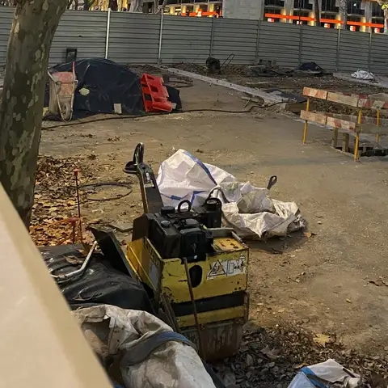
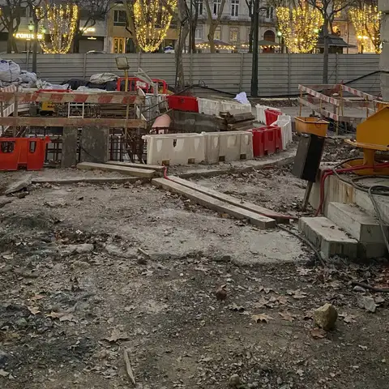
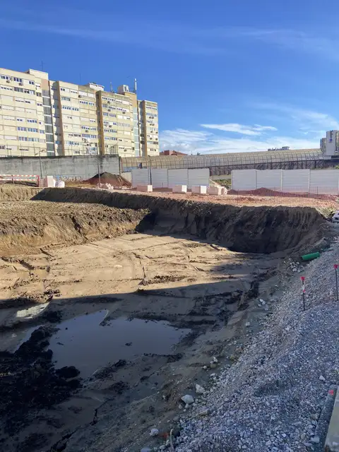
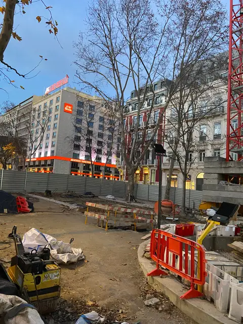
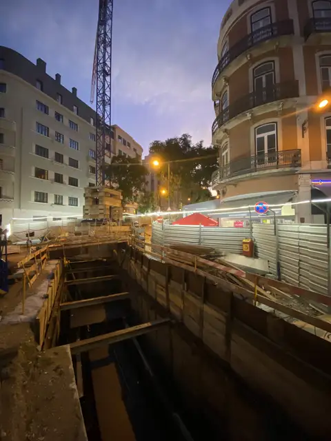
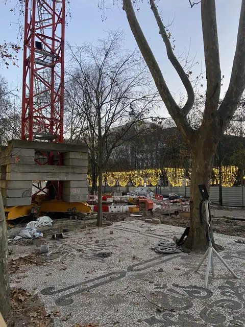
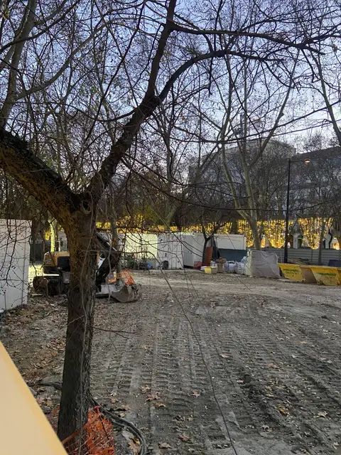
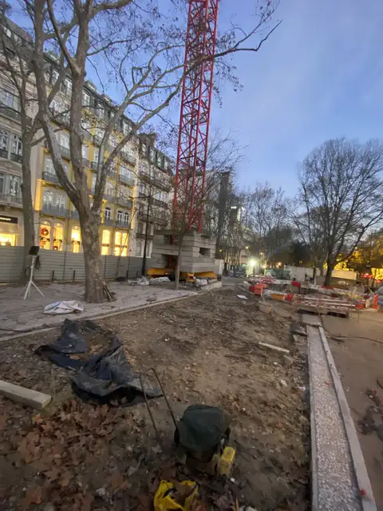
02 · The prototype
The prototype has been demonstrated on a real DWG file and real site photos. It has not yet run on a live site. The first field test is the next step.
Prototype interface, tested on a real project's plan and imagery. Field test next. Client file names, site coordinates and figures are blurred.
03 · Who it is for
You already have the DWG plan. WorkGuardAI uses it to show how far excavation and groundwork have come at each location, from photos your team can take on a normal site visit.
Cities and agencies that commission roads, utilities and public works can follow progress per location against the approved plan, measured from site photos.
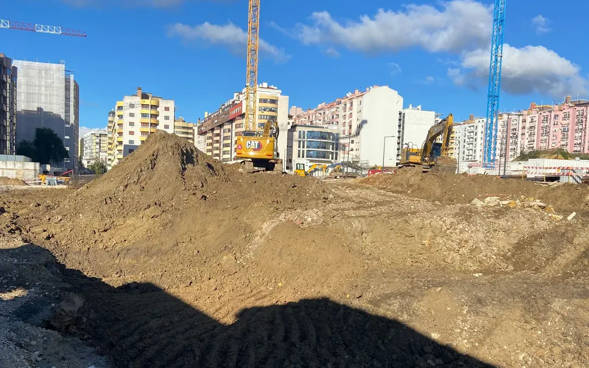
04 · About
WorkGuardAI was founded in Finland on 30 July 2024. The team works across Europe, close to the contractors and public owners who would use the product.
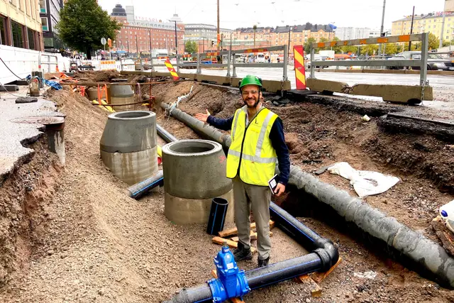
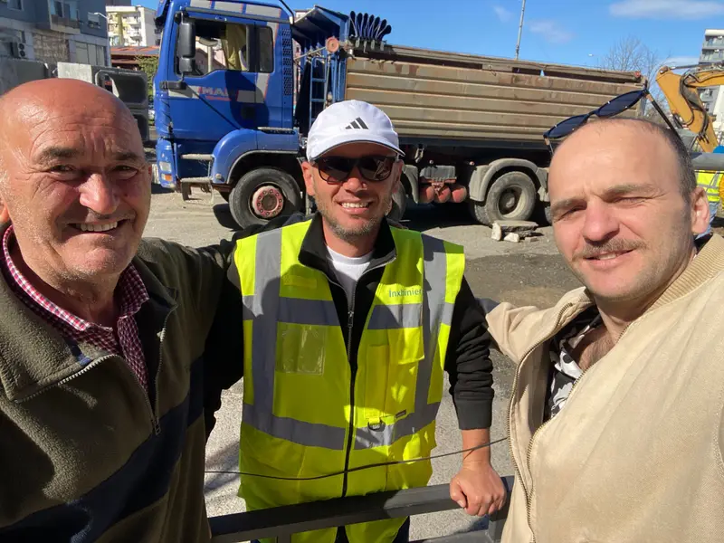

05 · Milestones
Three years of programmes, competitions and building, each step recorded with its source.
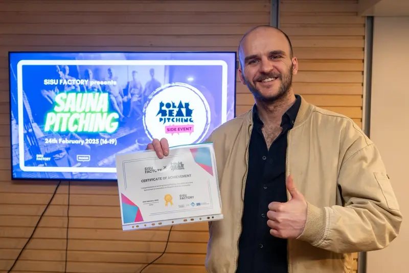
MeOut Summit · Budapest, Hungary
1 of 20
startups selected from roughly 200 applications to pitch on stage at the MeOut Summit Pitch Marathon in Budapest, Hungary, 25–26 November 2026.
Baltic Impact Accelerator
€8,000
in programme funding from LUT University's Baltic Impact Accelerator (Interreg Central Baltic, co-funded by the EU), used to build the MVP.
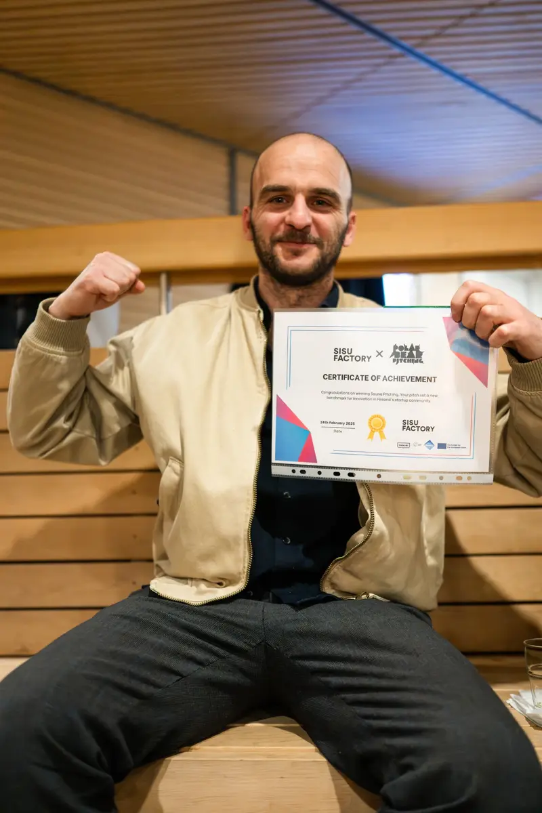
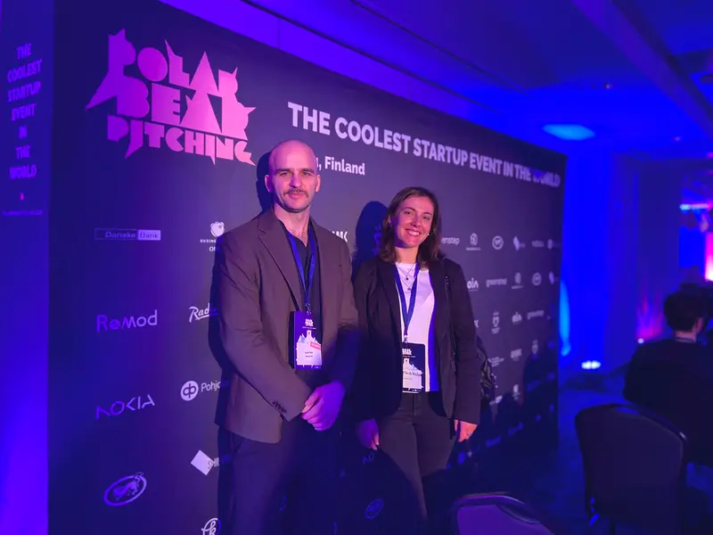
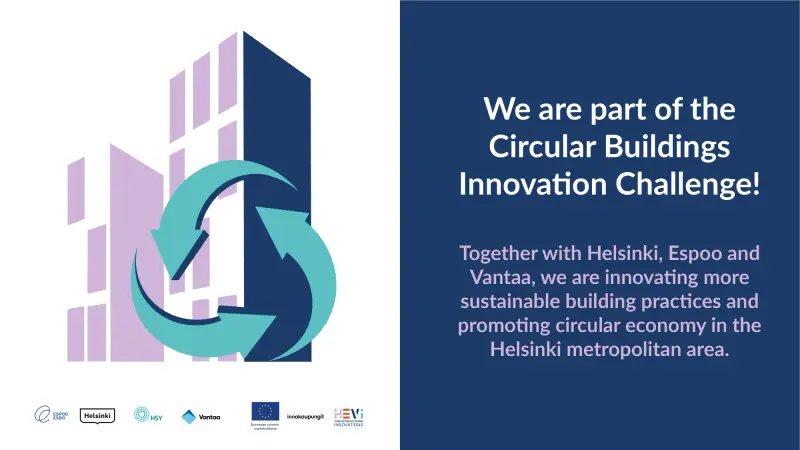
Selected as one of 20 startups, from roughly 200 applications, to pitch on stage in the Pitch Marathon on 25–26 November, in front of an investor panel. Featured on EU-Startups.
Article on EU-Startups (opens in a new tab)Shortlisted for the 10-week growth programme and pitched to the selection panel on Selection Day, 9 September.
After an initial review, VINCI Energies expressed interest in WorkGuardAI and invited us to apply to its 2026 challenge “Expertise meets AI”. Application submitted.
Completed cohort 3 of the six-month accelerator, funded by Interreg Central Baltic and co-funded by the European Union, with €8,000 in programme funding.
About the programme (opens in a new tab)The core engine was built with a development partner, funded through the Baltic Impact Accelerator.
At Slush 2025 among the Helsinki Incubators alumni.
Announcement on LinkedIn (opens in a new tab)Selected by the three cities among competing bidders, to develop more sustainable building practices in the Helsinki region.
Announcement on LinkedIn (opens in a new tab)Guest startup at Polar Bear Pitching in Oulu on 27 February 2025, the prize for winning Sauna Pitching.
Won Sauna Pitching on 24 February 2025.
Announcement on LinkedIn (opens in a new tab)Completed the six-month Helsinki Incubators programme, with mentors and weekly workshops on business models, sales and pitching.
Company founded in Finland on 30 July 2024.
Where the idea began, as remote monitoring for vehicles. Mentor feedback and pitching turned it towards construction sites.
SUPPORTED BY
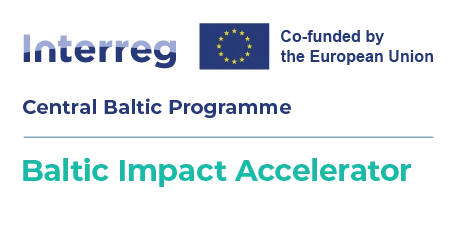
Programmes completed: Baltic Impact Accelerator (LUT University, Interreg Central Baltic) and NEXUS Incubator (Helsinki Incubators, University of Helsinki).
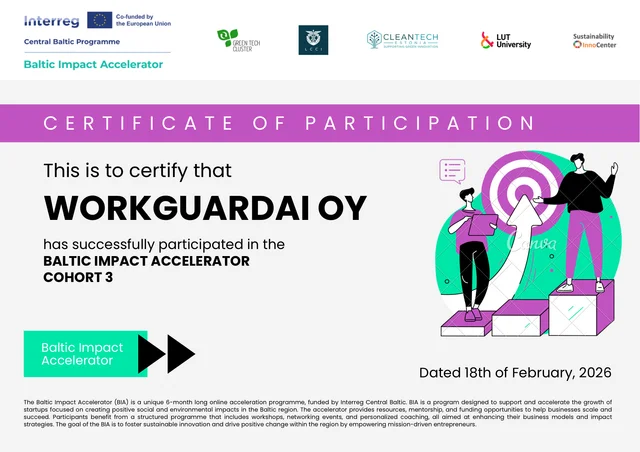
06 · Team
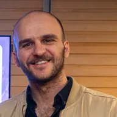
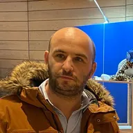
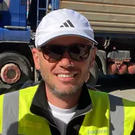
07 · Pilot
We are looking for the first live site. If you run groundwork or infrastructure work and have DWG plans for it, a short call is enough to see whether a pilot fits.
We show the prototype on a demo project and check that your site fits: groundwork or infrastructure, DWG plans, and someone who can take photos.
One site, a fixed period and clear data handling, agreed in a short pilot agreement. We load your DWG plan and set up access for your team.
Your team takes photos at plan coordinates. We check in every week and compare the results with your own measurements. You get a written results report.
Pilots are agreed one site at a time. Pricing is set after the field test, based on what it shows.
For technology, surveying and construction partners, and for funding bodies, cities, universities and investors who back early European construction technology.
ek@workguardai.com